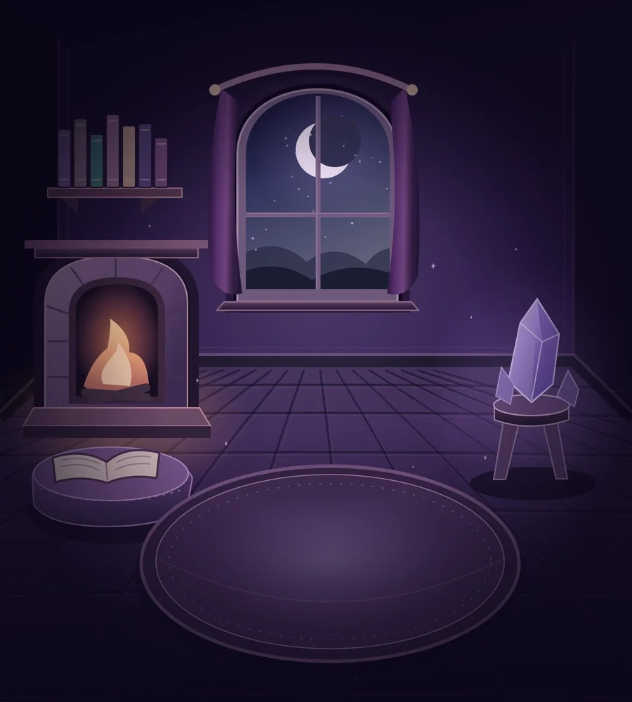
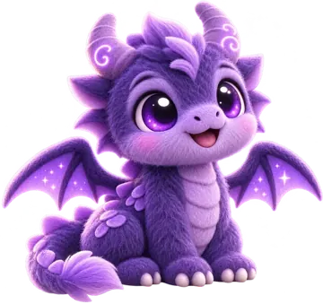
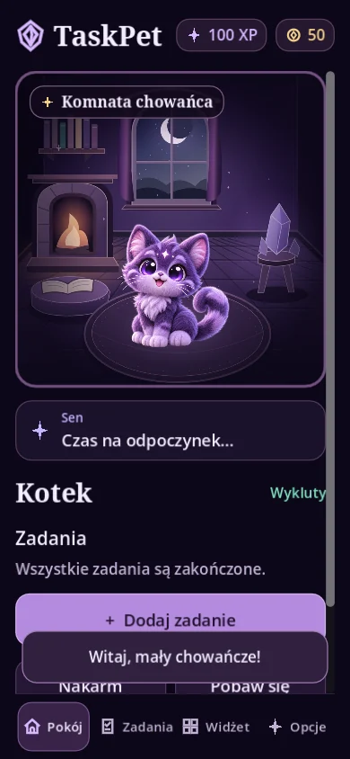
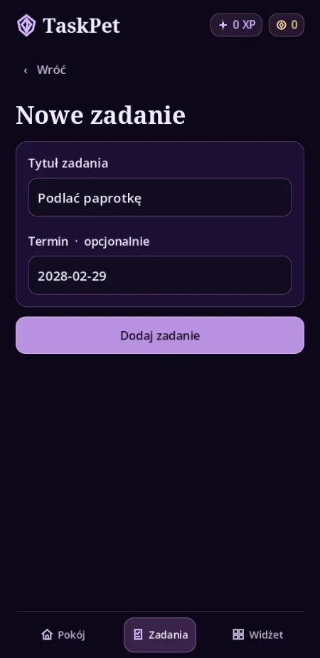
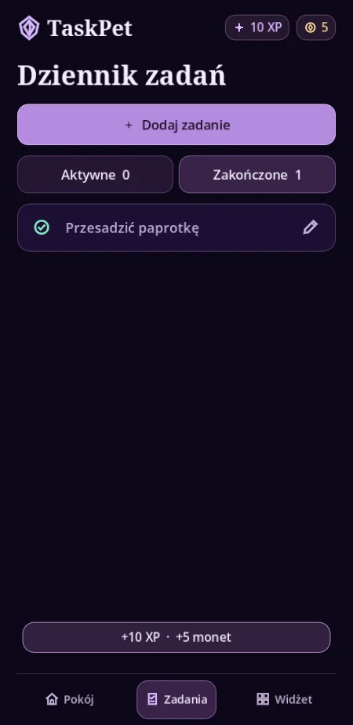

ProgressKit / Android / w testach
Małe zadania.
Żywy świat.
Twój dzień ma
nowego towarzysza.
TaskPet łączy organizer zadań, wirtualnego pupila i urządzanie pokoju. Publiczna wersja jest w przygotowaniu.
Poznaj pupilaZobacz, jak to działa

Dark Violet Crystal Glass
Miejsce, do którego chcesz wracać.
Wybierz pupila i wyposażenie. Obróć pokój przyciskami lub przeciągnij go poziomo. Dotknij zwierzaka, by zobaczyć jego reakcję.
Smok: Łagodny odkrywca, który kocha magiczne iskry.
Pokój jest sceną 3D. Pupil jest animowaną prezentacją 2.5D oryginalnej grafiki z aplikacji. Pokaz działa w pamięci przeglądarki.
Twój pokój, Twoje tempo.
Wybierz mebel, aby ustawić go w pokazowym pokoju. Prezentacja nie kupuje ani nie odblokowuje przedmiotów w aplikacji.
Wybierz wyposażenie.
Organizer + chowaniec
Zrób miejsce
na małe zwycięstwa.
W aplikacji: zadania jednorazowe, codzienne, tygodniowe i dwutygodniowe, godziny, przypomnienia oraz widżety Android.
Ukończenie zadania daje nagrodę i wspiera rozwój pupila. Poniższy pokaz korzysta z przykładowego zadania, bez dostępu do zapisów aplikacji.
Przykładowy dzień
Chwila na spacer
Dzisiaj · 17:00 · codziennie
20 / 100 XP w pokazie
Przedmioty i personalizacja
Rozwijaj swój mały świat.
Meble, dekoracje, zapasy i dodatki są częścią systemu przedmiotów TaskPet. Ta prezentacja nie jest sklepem i nie obsługuje płatności. Dostępność zakupów Google Play nie została potwierdzona.
Z istniejącej aplikacji
Zobacz prawdziwe ekrany.



TaskPet w ruchu
Materiał prezentacyjny z oryginalnych zasobów i ekranów aplikacji.
TaskPet / w rozwoju
Małe zadania. Żywy świat.
Publiczna dystrybucja jest w przygotowaniu. Nie udostępniamy tutaj prywatnych kompilacji.
Napisz do ProgressKitWszystkie projekty